| SSB | R | F | Seasons | Selectivity |
|---|---|---|---|---|
| -0.081 | -0.104 | 0.114 | 4 | constant |
| -0.027 | -0.044 | 0.182 | 4 | changing |
| 0.123 | 0.127 | 0.030 | 2 | changing |
| 0.065 | -0.007 | 0.100 | 2 | constant |
| 0.316 | 0.167 | -0.485 | 1 | constant |
Comparing candidate models v2
Nis Sand Jacobsen
Introduction
This repository serves to compare different potential model configurations for the North Sea sprat. All the models we will show are based on the seasonal smsR model. Until 2025 the model has run with ADMB, but here we use the smsR package. The package and the data are available at
Current issues with the assessment.
- Convergence issues related to seasonal catches and catch variance
- Retrospective patterns
- scaling of 0 year olds
- Power law implementation
- Residual catch patterns
New steps since last week
- Conducted additional analysis on age 0 settings
- Implemented a selectivity block to combat residual patterns in season 3/4 catches
- The selectivity block modifies age and seasonal selectivity from 2015 onwards
- Identified a setting that leads to low retros in the two season model
Age zero setttings
- Comparison of estimating recruitment deviations (SDR)
- Estimating the power law
- Using custom weighting on stock recruitment
- Permutations of all options leading to 8 runs
Compare SSB
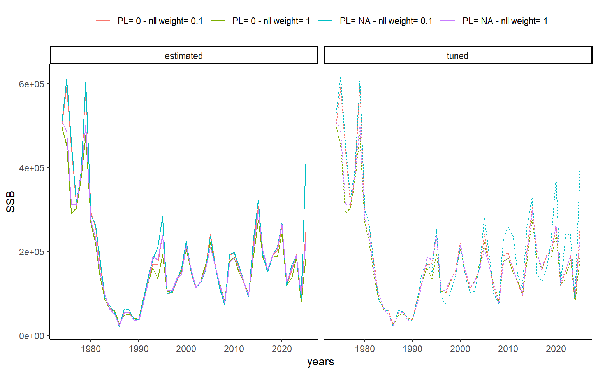Figure 1: Spawning stock biomass (SSB) trajectories by SDR scenario.
Comparison of R
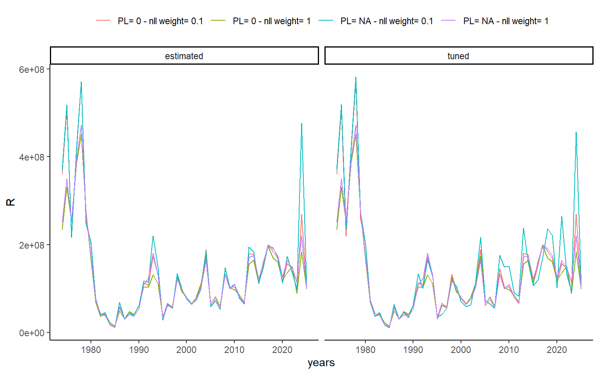Figure 2: Recruitment (R) trajectories by SDR scenario.
Retrospective patterns

Figure 3: Mohns rho for the different recruitment configurations
AIC
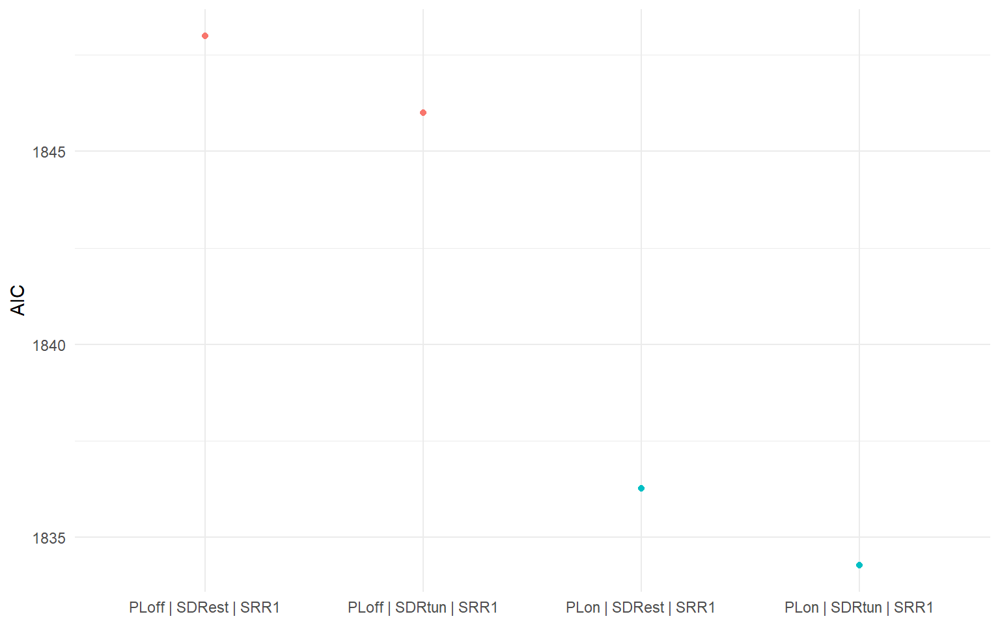Figure 4: AIC of power law and estimated SDR models
SSB forecasting
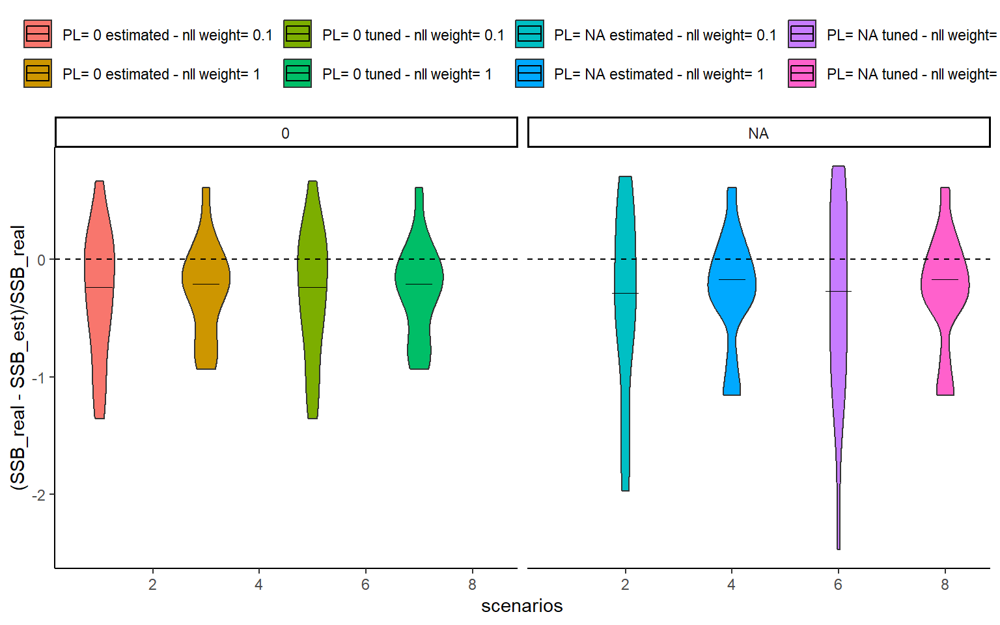Figure 5: In year (SSB-SSBforecast)/SSB for the different recruitment models. The figure shows a violin plot of the 15 peels
SSB forecasting continued
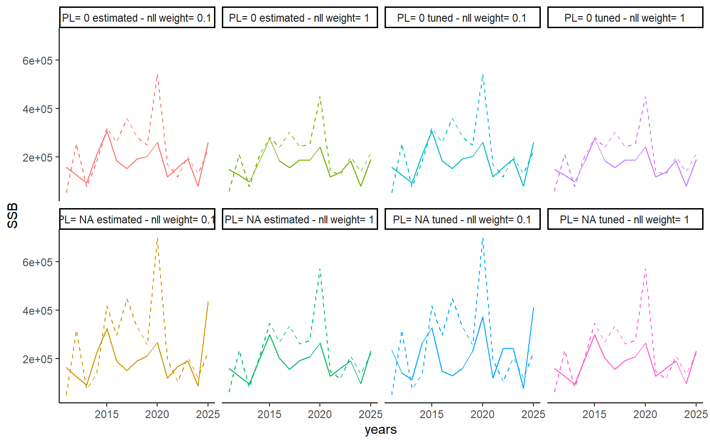Figure 6: In year forecast versus the estimated SSB the following year. Dashed line shows the forecasted SSB
Decisions
- Choice on powerlaw
- Choice on stock recruitment estimation
- Choice on tuning vs estimating stock recruitment variance
- Suggestion: no power, SRR = 1, and estimating stock recruitment variance
- Why? Lowest retros, most stable model (Q and power law are correlated).
Selectivity
- Implemented new selectivity estimator in smsR
- Estimates seasonally changing selectivity blocks
- To improve residual patterns in catches
Compare selectivity models
I used SRR = 1, estimate standard dev of R and no power law.
The SSB has similar dynamics, however the choice of 2 or four seasons has an impact on the scaling, which is slightly different (Figure 7).
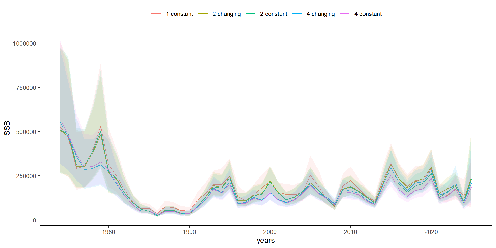
Recruitment
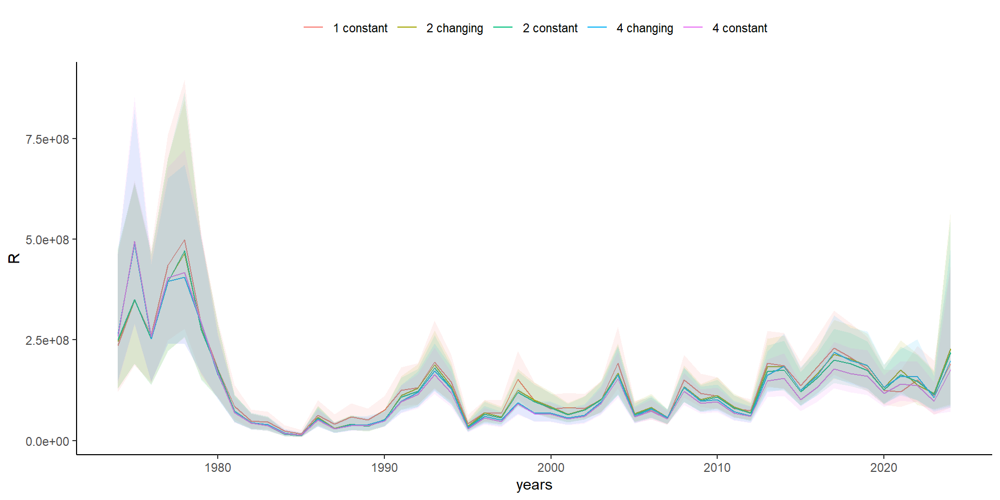
Retrospective patterns
Residual patterns (four seasons, selectivity blocks)
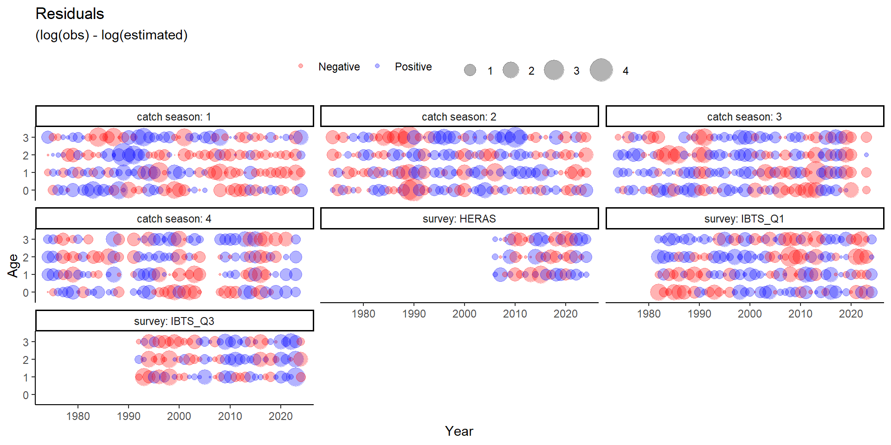Residual patterns (four seasons no sel)
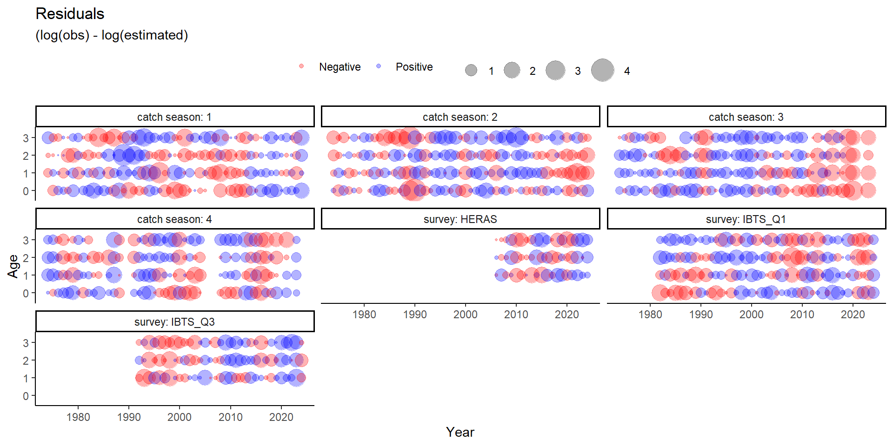Residual patterns (two seasons no sel)
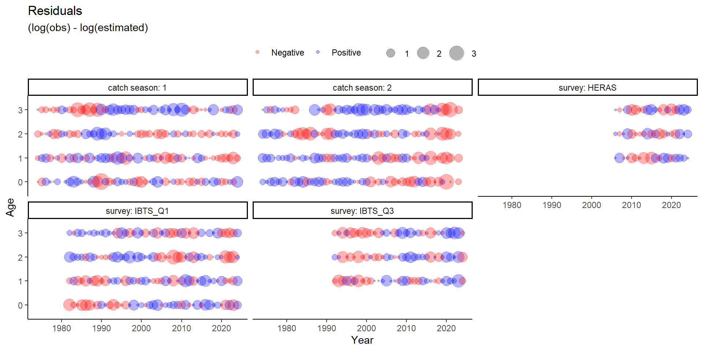Residual patterns (two seasons sel)
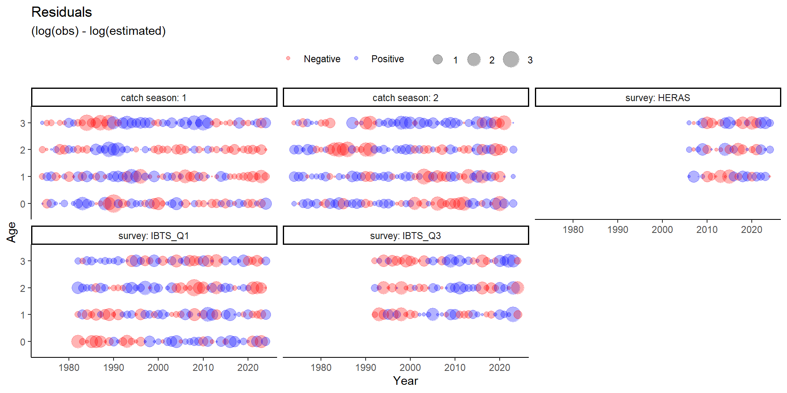Residual patterns (1 seasons no sel)
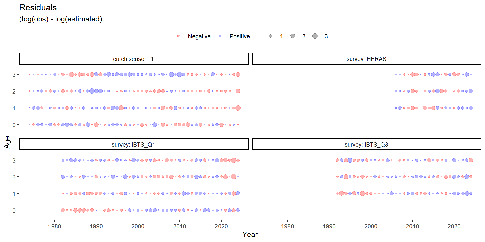AIC (four seasons)
| Model | nparms | AIC |
|---|---|---|
| sel_four_seasons | 161 | 3097.22 |
| four_seasons | 149 | 3144.84 |
AIC (two seasons)
| Model | nparms | AIC |
|---|---|---|
| sel_two_seasons | 139 | 1813.97 |
| two_seasons | 135 | 1848.00 |
Other considerations
- The two season model is faster, and does have fewer issues with catch variance parameters
- The outputs shown here could slightly change given the age 0 decisions
- The yearly model has gradient issues in the retrospective analysis